Primeros pasos
En el menú lateral izquierdo se encontrará con todas las opciones que se podrán realizar en el modulo de Facturacion POS en el aplicativo de Persey.
Guia visual :
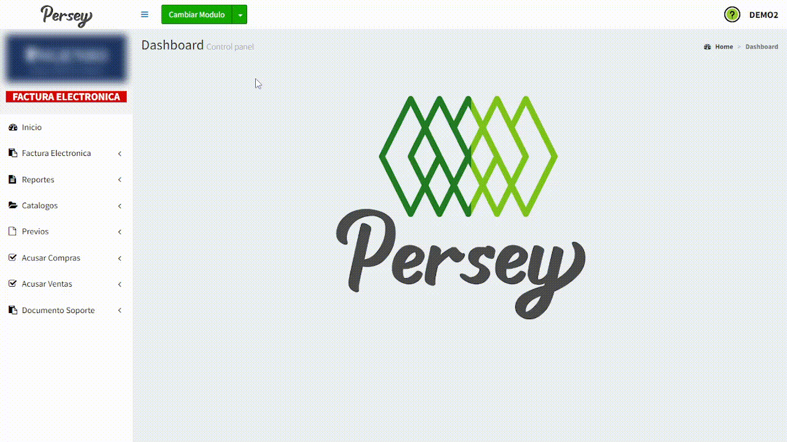

En el menú lateral izquierdo se encontrará con todas las opciones que se podrán realizar en el modulo de Facturacion POS en el aplicativo de Persey.
Aqui se podrá guiar paso a paso sobre como generar una factura Electronica, tambien aprenderá a visualizarlas, acusar compras, ventas y documentos de soporte.
En esta sección se podrá crear facturas diligenciando un formulario con los datos correspondientes teniendo en cuenta la siguiente información en la imagen.

Para la creación de una factura Electronica es trascendental tener un cliente o proveedor creado con anterioridad. Si no tiene un cliente o proveedor, por favor registre un nuevo cliente o proveedor para dicha facturación; en caso de que ya tenga un cliente registrado, se ignora el Paso 1.
Para registrar un nuevo cliente lo puede hacer desde la misma ventana como se muestra en la siguiente imagen o dirigirse hacia el modulo de "Administracion en la sección de "Terceros".

Es importante que se diligencien los campos del formulario teniendo en cuenta, si es persona natural o persona juridica, posterior a eso clickee el botón "Guardar" en la parte inferior.
Por favor, los campos que tengan un asterisco (*), se deben llenar obligatoriamente.
Razón Social y Nombre Comercial: Tenga en cuenta que la razón social y el nombre comercial pueden ser diferentes dependiendo de la información de la empresa
Lista de Precios: Tenga en cuenta que la lista de precios es dependiente de la configuración de precios que asigno a los articulos y sus listas.
En caso de seleccionar "Persona Natural" se bloqueará el campo de "Razón Social".
A continuación, se mostrará la vista de como se bloquean los campos si selecciona "Persona Natural" y como diligenciar el formulario:


En caso de seleccionar "Persona Juridica" se bloquearán los campos de "Primer nombre de la persona", "Segundo nombre de la persona", "Primer apellido de la persona" y "Segundo apellido de la persona".
A continuación, se motrará la vista de como se bloquean los campos si selecciona "Persona Juridica" y como diligenciar el formulario:


Por ultimo, se ilustrará como crear un cliente:

En esta sección debe diligenciar los campos correspondientes a la información del documento , hay que tener en cuenta que si da click donde dice "Seleccionar Prefactura" y la selecciona, automaticamente se le diligenciarán los campos del formulario con la prefactura y solo habria que darle a "Guardar Factura".
Nota: Es importante verificar los valores de las cantidades, descuentos y precios de los prouctos para proceder a guardarEn caso de no tener prefactura, se deben llenar todos los campos correspondientes teniendo en cuenta los siguientes pasos:
En ocasiones, puede que se necesite editar la factura sin si quiera haberla guardado, para lo anterior es necesario digirse hacia producto y, en la zona derecha del mismmo podrá editarlo o eliminarlo según sea el concepto. Cabe aclarar que si lo elimina, desaparecerá completamente de la factura, pero si se elige la opción editar, el producto saldrá de la sección de Productos registrados y se deberá agregar nuevamente para que se regitre en la factura.
NOTA: El anterior proceso funciona si se cargo una prefactura o si se está diligenciando una factura manualmente.Para eliminar un producto se debe seleccionar la opción de eliminar que corresponde al producto de interes

Se debe seleccionar la opción de editar articulo

Hay que tener en cuenta que el producto se direccioná hacia la sección "detalle de factura", por lo tanto, cuando se edite el producto, se debe dar al botón "Agregar" nuevamente y cuando este completamente seguro de los cambios, se debe dar en "Guardar Factura".

Si la empresa tiene activado las retenciones le aparecerá un formulario al final donde las puede diligenciar teniendo en cuenta campos como: "Porcentaje de ReteFuente", "Tarifa X 1000 para la ReteICa", sus respectivas bases y los totales. .


En esta sección podrá visualizar todas las facturas creadas y enviar la factura a la DIAN. Para ello contará con el campo "Estado" y así podrá ver si ya se envió o no.
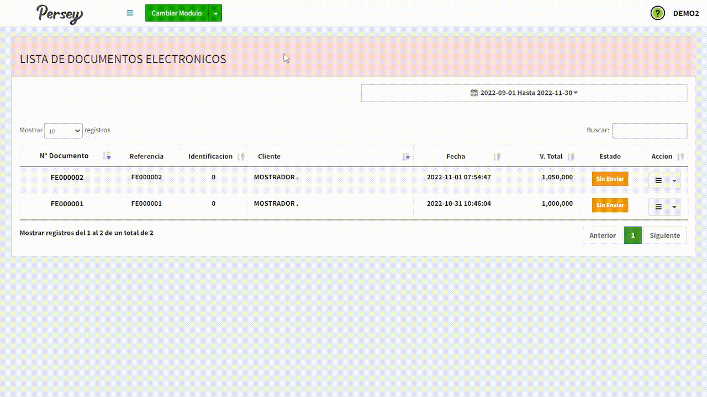En esta seccion podrá visualizar todos los reportes por diferentes categorías como por periodos, por impuestos, por grupos y mas.
Es importante saber que para ver cualquier tipo de reporte es necesario dar click sobre la opción "Reportes" como lo muestra la siguiente imagen.
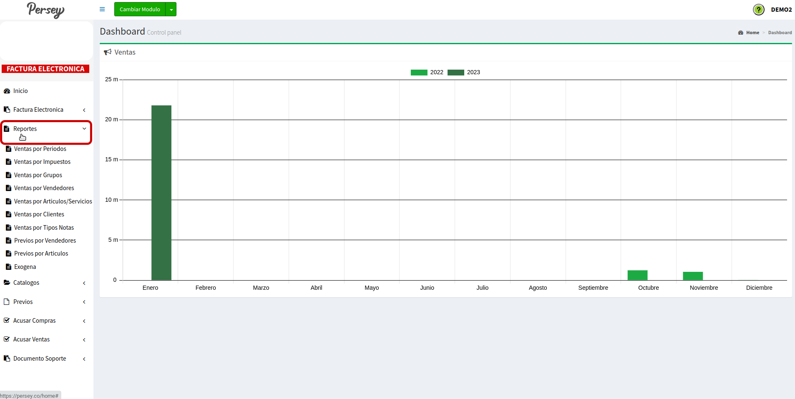Para ver este reporte debe diligenciar el formulario , escoger el talonario, la fecha desde-hasta y darle click en el boton que dice "VER". Tambien puede descargarlo en PDF dandole click en el boton que dice "PDF"
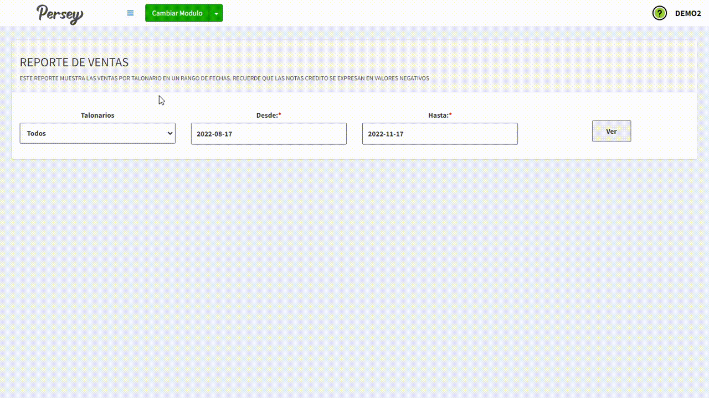Para ver este reporte debe diligenciar el formulario , escoger el talonario, la fecha desde-hasta y darle click en el boton que dice "VER". Tambien puede decargarlo en PDF o Excel dando click en el boton "PDF" o "Excel"
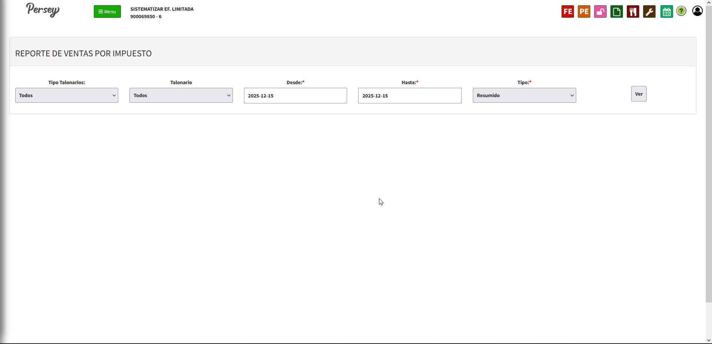Para ver este reporte debe diligenciar el formulario, escoger el talonario, el grupo, la fecha desde-hasta y darle click en el boton que dice "VER". Tambien puede descargarlo en PDF dandole click en el boton que dice "PDF"

Para ver este reporte debe diligenciar el formulario , escoger el talonario, la fecha desde-hasta y darle click en el boton que dice "VER". Tambien puede descargarlo en PDF dandole click en el boton que dice "PDF"
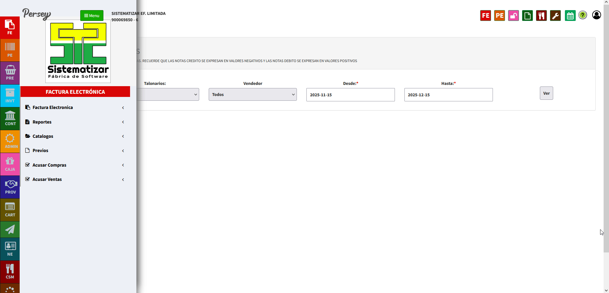Para ver este reporte debe diligenciar el formulario , escoger el talonario, la fecha desde-hasta y si quiere un reporte detallado o resumiodo luego darle click en el boton que dice "VER". Puede filtrar los reportes dependiendo si quiere por articulos, cliente y fecha. Tambien puede descargarlo en PDF dandole click en el boton que dice "PDF"
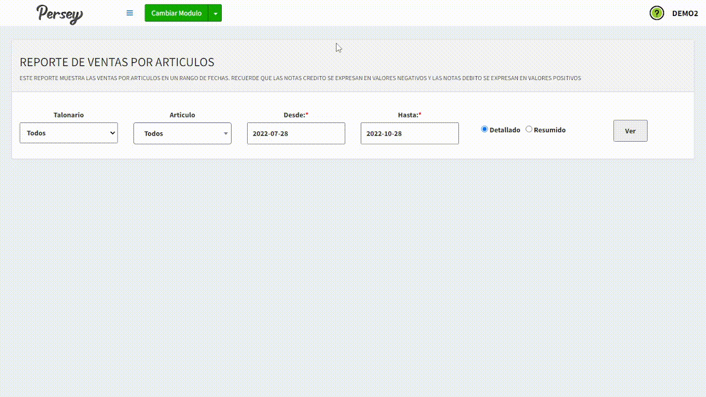Para ver este reporte debe diligenciar el formulario , escoger tipo de nota , la fecha desde-hasta y luego darle click en el boton que dice "VER". Tambien puede descargar el reporte en PDF dando click en el boton "PDF"
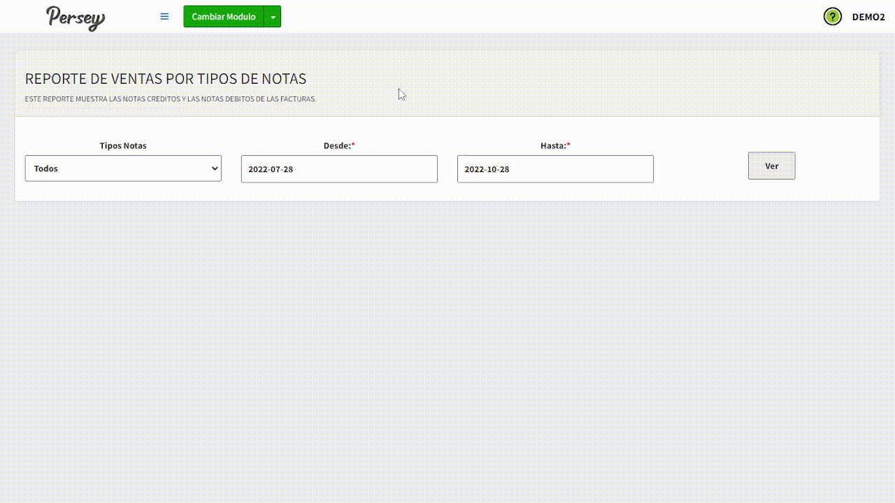Para ver este reporte debe diligenciar el formulario , escoger el talonario, clientes, la fecha desde-hasta y darle click en el boton que dice "VER". Tambien puede descargarlo en PDF dandole click en el boton que dice "PDF"
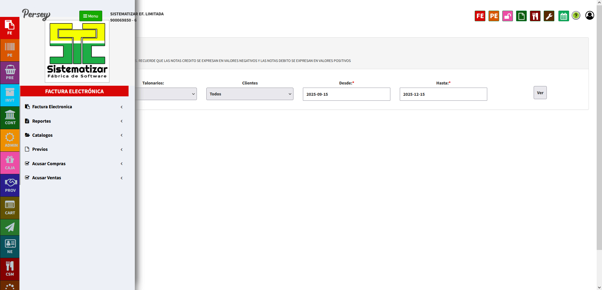Para ver este reporte debe diligenciar el formulario , escoger el talonario, el vendedor, la fecha desde-hasta y si quiere un reporte detallado o resumiodo luego darle click en el boton que dice "VER". Tambien puede descargarlo en PDF dandole click en el boton que dice "PDF"

Para ver este reporte debe diligenciar el formulario , escoger el talonario, el articulo, la fecha desde-hasta y si quiere un reporte detallado o resumiodo luego darle click en el boton que dice "VER". Tambien puede descargarlo en PDF dandole click en el boton que dice "PDF"

Para ver el reporte de información exogena de venta solo debe seleccionar el año y darle click en el boton que dice "VER", Tambien puede descargarlo en formato Excel dandole click en el boton Excel
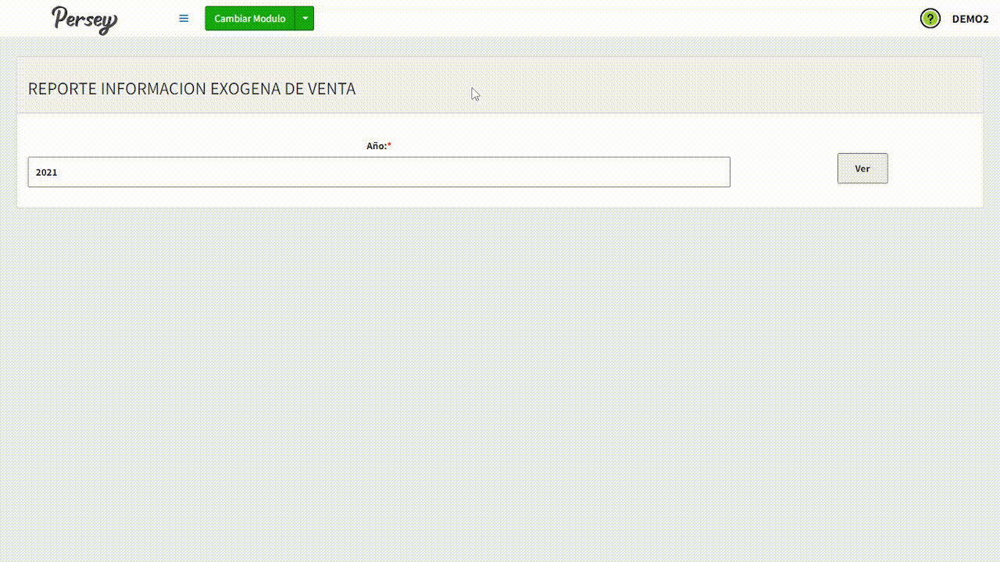En esta seccion Usted podrá visualizar todos los terceros que tiene registrados, tambien podrá editarlos, eliminarlos y agregar nuevos
Le aparecerán todos los terceros que tenga en una lista, usted puede modificarlos dando click en el boton amarillo y crear uno nuevo dando click en el boton que dice NUEVO

Por favor, los campos que tengan un asterisco (*), se deben llenar obligatoriamente.
Razón Social y Nombre Comercial: Tenga en cuenta que la razón social y el nombre comercial pueden ser diferentes dependiendo de la información de la empresa
Lista de Precios: Tenga en cuenta que la lista de precios es dependiente de la configuración de precios que asigno a los articulos y sus listas.
En caso de seleccionar "Persona Natural" se bloqueará el campo de "Razón Social".
A continuación, se mostrará la vista de como se bloquean los campos si selecciona "Persona Natural" y como diligenciar el formulario:
En caso de seleccionar "Persona Juridica" se bloquearán los campos de "Primer nombre de la persona", "Segundo nombre de la persona", "Primer apellido de la persona" y "Segundo apellido de la persona".
A continuación, se motrará la vista de como se bloquean los campos si selecciona "Persona Juridica" y como diligenciar el formulario:
Por ultimo, se ilustrará como crear un cliente:
En esta seccion usted podrá registrar una prefactura y tambien podrá visualizar todas las prefacturas que ha registrado
Para crear un nuevo previo debe escoger o crear el cliente(tercero). Buscar los productos que desea añadir a su prefactura y darle guardar

Aqui le apareceran todos los previos o prefacturas que haya generado

En esta seccion se podrá registrar un acuse de compras. Unicamente se pueden subir la factura en formato ZIP y que sea credito.
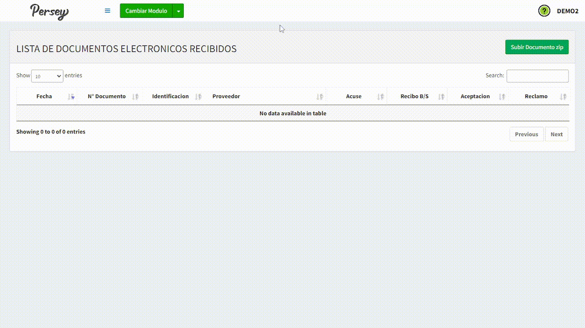Hay que tener en cuenta los acuses de compra se deben generar cuando se realiza una compra a credito. Cuando usted está haciendo un acuse de compra se pueden hacer las siguientes acciones.
Se Acusa una Compra.
Solo despues de acusar una compra se puede hacer un recibo de "B/S" (Bienes y Servicios).
Posterior a eso puede hacer la "Aceptación de Factura".
Si por alguna razón se quiere hacer un "Reclamo de Factura" lo puede hacer de la siguiente forma:
Oprima la opción "Reclamo de Factura"
Le aparecerá un formulario, el cual se autocompletará en gran parte, solo se deberá diligenciar la opción "Concepto Reclamos" donde deberá elegir el concepto de reclamo como puede ser: "Documento con inconsistencias", "Mercancia no entregada totalmente", "Mercancia no entregada parcialmente" ó "Servicio no prestado". , tambien deberá escoger la "Fecha" y su correspondiente "Talonario" para posteriormente darle en "Reclamo Factura y listo.
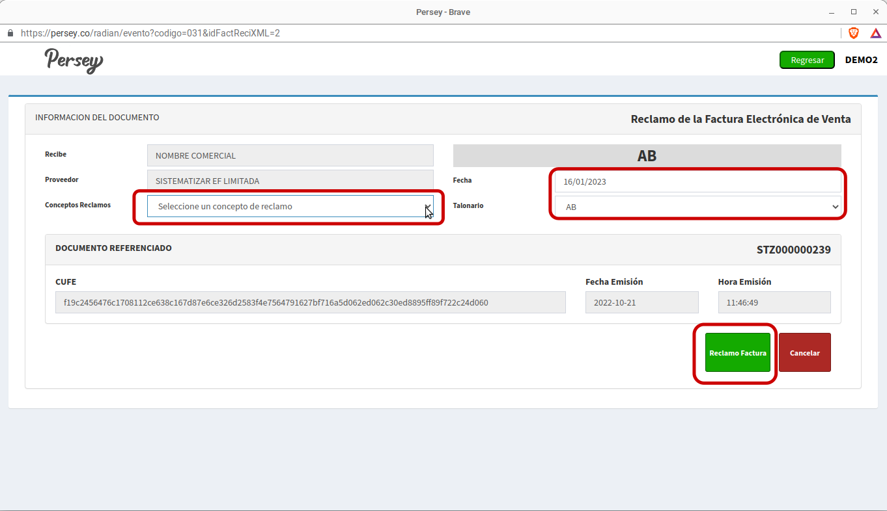En esta seccion usted podrá registrar un documento soporte. Es una factura para una empresa de una persona natural que no esta obligada a hacer su facturación electronica
Debe llenar todos los campos correspondientes o si ya tiene una prefactura solo le da click donde dice prefactura y la selecciona automaticamente se le diligencia. Debe buscar y agregar los servicios

Es importante que seleccione un servicio según sea la categoria para su posterior agregación
Por ultimo, se le da al botón "Agregar" y posteriormente se le da "Guardar" en la parte inferior
Es importante no olvidar que se deben rellenar los campos del servicio seleccionadoEn esta sección debe diligenciar los campos correspondientes a la información del documento , hay que tener en cuenta que si da click donde dice "Seleccionar Prefactura" y la selecciona, automaticamente se le diligenciarán los campos del formulario con la prefactura y solo habria que darle a "Guardar Factura".
Nota: Es importante verificar los valores de las cantidades, descuentos y precios de los prouctos para proceder a guardarEn caso de no tener prefactura, se deben llenar todos los campos correspondientes teniendo en cuenta los siguientes pasos:
En ocasiones, puede que se necesite editar la factura sin si quiera haberla guardado, para lo anterior es necesario digirse hacia producto y, en la zona derecha del mismmo podrá editarlo o eliminarlo según sea el concepto. Cabe aclarar que si lo elimina, desaparecerá completamente de la factura, pero si se elige la opción editar, el producto saldrá de la sección de Productos registrados y se deberá agregar nuevamente para que se regitre en la factura.
NOTA: El anterior proceso funciona si se cargo una prefactura o si se está diligenciando una factura manualmente.Para eliminar un producto se debe seleccionar la opción de eliminar que corresponde al producto de interes
Se debe seleccionar la opción de editar articulo
Hay que tener en cuenta que el producto se direccioná hacia la sección "detalle de factura", por lo tanto, cuando se edite el producto, se debe dar al botón "Agregar" nuevamente y cuando este completamente seguro de los cambios, se debe dar en "Guardar Factura".
Aqui podrá visualizar todos los documentos soporte y tambien enviarlos a la Dian desde el boton azul "ENVÍO DIAN"
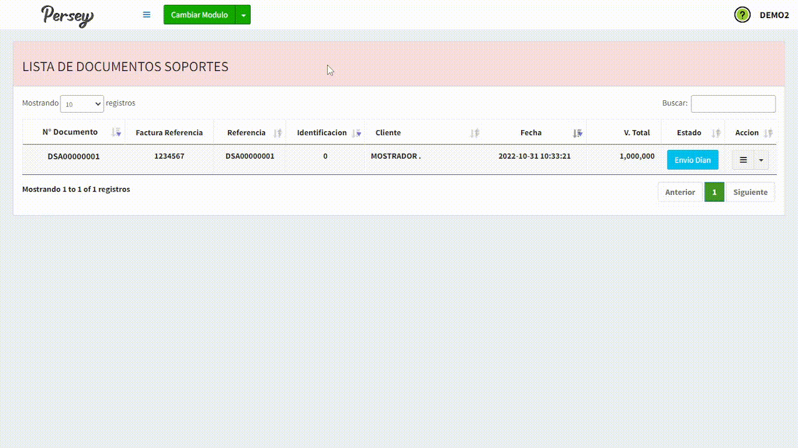Tambien podrá observar las opciones por cada documento de soporte, usted podrá imprimir, contabilizar, visualizar o realizar una nota de ajuste
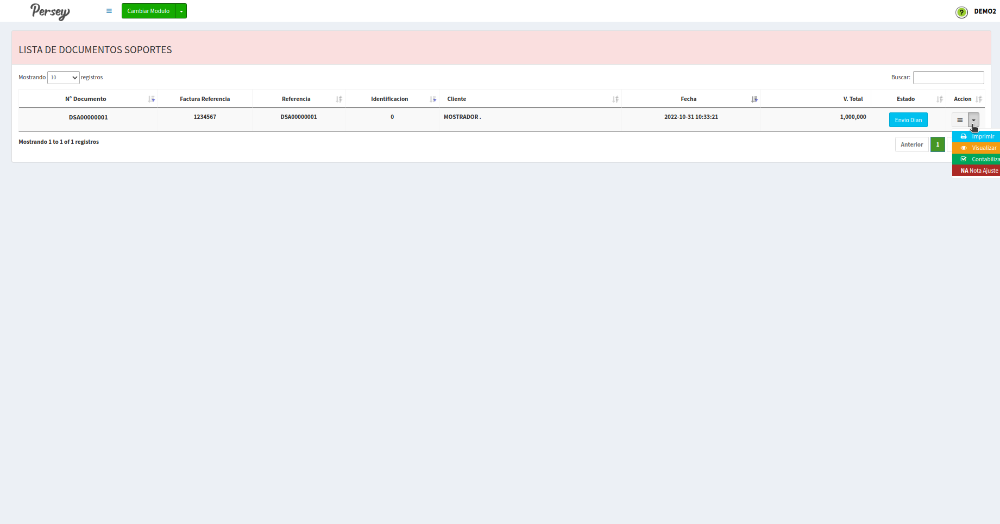Debe dar click sobre la opción de nota de ajuste, dele "ok" y luego marque la opción "Anular Documento Soporte"
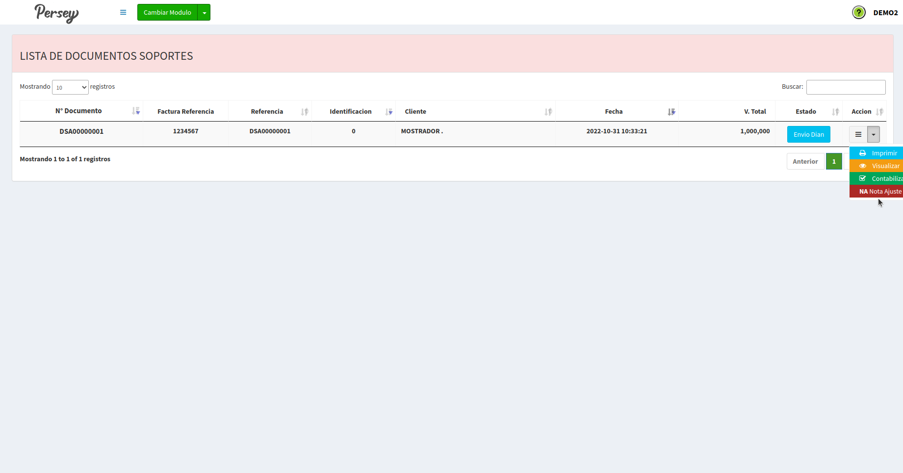 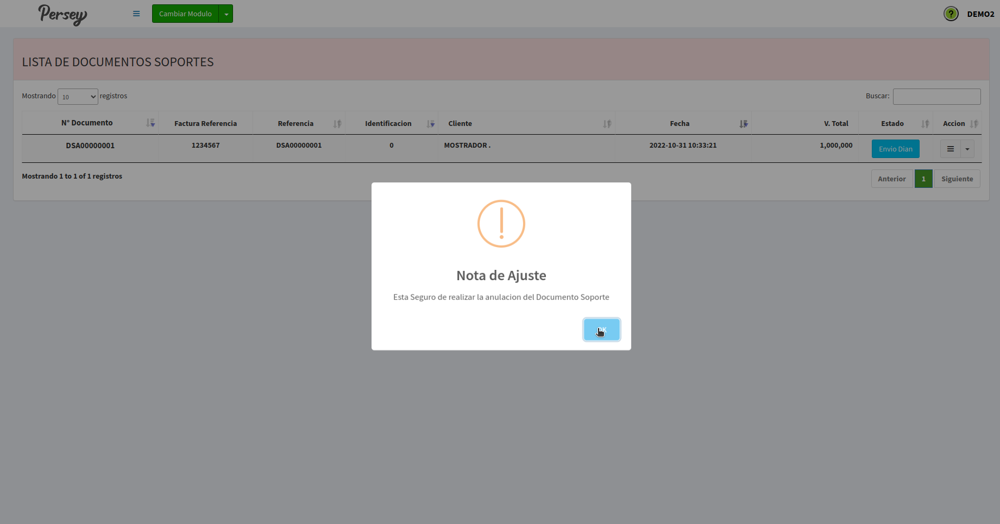 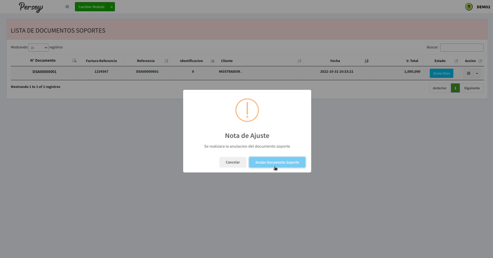